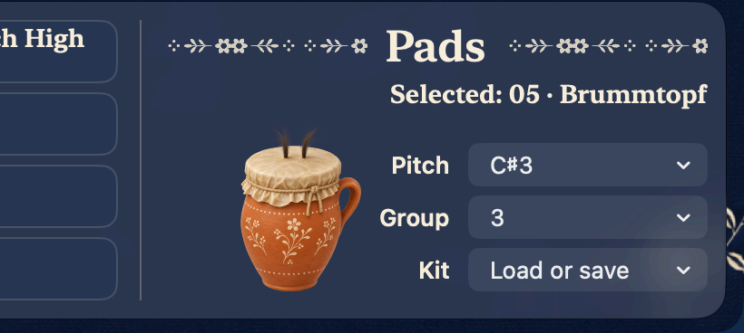
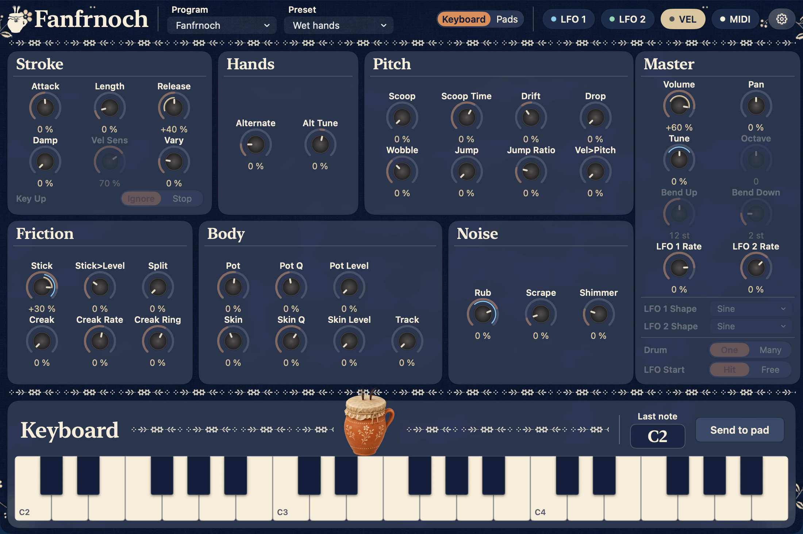

Začínáme
- Stáhněte obraz disku ze stránky ke stažení a otevřete ho.
- Přetáhněte Fanfrnoch do složky Aplikace a spusťte ji odtamtud.
- Klikněte na klávesu klaviatury ve spodní části okna. U horního okraje klávesy je tah slabý, níž je silnější. Hrát můžete i z MIDI klaviatury: aplikace poslouchá všechna připojená MIDI zařízení, dokud si nevyberete jedno.
- Zvuk jde do výstupu nastaveného v macOS. Jiné zařízení, nebo jedno MIDI zařízení či kanál, vyberete po kliknutí na ozubené kolečko vpravo v hlavičce (Settings; viz Nastavení).
- Chcete-li Fanfrnoch hrát v hostitelském programu, jako je Logic Pro nebo Ableton Live, otevřete Settings a klikněte na Install Audio Unit (viz Plugin Audio Unit).
Fanfrnoch je třecí buben: hliněný hrnec potažený blánou, kterou prochází dva svazky koňských žíní, a po žíních táhnou mokré ruce. Každá nota je jeden tah ruky. Aplikace si zvuk pamatuje mezi spuštěními: knoby klaviatury, všech šestnáct padů, režim, vybraný pad i preset, ze kterého každý zvuk pochází. Pamatuje si také vaše MIDI ovladače (viz MIDI ovladače).
Hlavní okno

- 1Program
- Načte do knobů jeden z dvanácti vestavěných zvuků (viz Hlavička).
- 2Preset
- Vaše vlastní zvuky uložené jako soubory: jeden načtete do knobů, knoby uložíte jako nový, nebo jeden smažete (viz Presety).
- 3Keyboard | Pads
- Režim: klávesy hrají jeden zvuk ve své výšce, nebo noty 36–51 rozeznívají šestnáct padů, z nichž každý má vlastní zvuk (viz Režim klaviatury a Režim padů).
- 4LFO 1, LFO 2, VEL
- Promění knoby v míry, o které jimi hýbe LFO nebo síla úderu (viz Míry LFO a VEL).
- 5MIDI
- Ukáže, který MIDI ovladač hýbe kterým knobem a přepínačem, a nechá je naučit se nové (viz MIDI ovladače).
- 6Settings
- MIDI vstup, zvukový výstup a instalace pluginu Audio Unit. Má je jen aplikace.
- 7Stroke, Hands, Pitch, Friction, Body, Noise, Master
- Knoby a přepínače zvuku v sedmi skupinách (viz Knoby a přepínače). V režimu klaviatury ukazují zvuk klaviatury, v režimu padů zvuk vybraného padu.
- 8Last note
- Poslední nota zahraná v režimu klaviatury; než nějaká zazní, je to C2. Tuto výšku dá padu tlačítko Send to pad.
- 9Send to pad
- Zkopíruje zvuk klaviatury do jednoho z padů (viz Send to pad).
- 10Klaviatura
- Tři oktávy, C2 až B4 (H4). Kliknutím na klávesu ji zahrajete: u horního okraje klávesy má tah sílu úderu (velocity) 40, u spodního 127. Puštění klávesy nebo sjetí myší mimo ni klávesu uvolní (to je důležité při Key Up = Stop); přetažením myši na jinou klávesu se ta nezahraje. V režimu padů jsou na tomto místě pady.
Hlavička
- Program
- Dvanáct vestavěných programů: český fanfrnoch a jeho příbuzní. Program nastaví všechny knoby, přepínače i míry zvuku, který knoby právě ukazují, kromě Octave: v režimu klaviatury zvuk klaviatury, v režimu padů zvuk vybraného padu. Program, který se právě používá, je zaškrtnutý.
- Fanfrnoch: výchozí hodnoty, koledníkův buben s koňskými žíněmi: tah dlouhý 230 ms, obě ruce trochu odlišné.
- Fanfrnoch High: vyšší buben z dvojice: kratší tahy, ruce se od sebe liší víc.
- Brummtopf: německý „bručící hrnec“: krátký a suchý, se silnou rezonancí hrnce.
- Zambomba: španělská zambomba: blána zní s tónem a zhruba každý pátý tah na ni vyskočí.
- Zambomba Grave: velká zambomba: nízký, široký hrnec a delší doznívání.
- Putipù: neapolské putipù: pomalé, hluboké, drsné bručení přes hlasitý hrnec.
- Cuíca: brazilská cuíca: krátké, čisté, vysoké tahy, ruce se od sebe hodně liší.
- Cuíca Whoop: houknutí cuíky: každý tah vyjede o 6,6 půltónu zdola do své výšky.
- Furruco: venezuelské furruco: nízké a drsné, jeho kmity jsou nestejně dlouhé.
- Creak: tón rozpadlý na jednotlivá smeknutí, z nichž každé rozezní blánu, jako vrzající dveře.
- Flick: žádné tření, jen švihnutí prstem přes žíně.
- Buhai: rumunský buhai: dlouhé, pomalé, nízké tahy (nastavené po sluchu: žádná nahrávka se neměřila).
- Preset
- Vaše presety, zvuky, které jste si uložili. Stejně jako Program působí na zvuk, který právě ukazují knoby. V názvu nabídky je preset, ze kterého tento zvuk pochází, nebo „—“ (viz Presety).
- Keyboard | Pads
- Přepíná mezi oběma režimy. Není to nastavení zvuku: přepnutím se žádný zvuk nezmění.
- LFO 1, LFO 2, VEL
- Z těchto tří tlačítek a tlačítka MIDI může být zapnuté vždy jen jedno. Dokud je zapnuté jedno z těchto tří, nastavují knoby míry tohoto zdroje; dalším kliknutím se vrátíte ke knobům (viz Míry LFO a VEL).
- MIDI
- Dokud je zapnuté, ukazuje každý knob a přepínač zvuku klaviatury místo své hodnoty svůj MIDI ovladač a po kliknutí se naučí nový; dalším kliknutím na MIDI se hodnoty vrátí (viz MIDI ovladače). Nabídka tlačítka po kliknutí pravým tlačítkem vrátí všem prvkům jejich standardní ovladač.
- Settings (ozubené kolečko)
- Otevře nastavení. Okno pluginu kolečko nemá: MIDI i zvuk tam obstarává hostitelský program.
Když preset nebo sadu nejde uložit, načíst ani smazat, například protože jeho soubor někdo smazal ve Finderu nebo je poškozený, objeví se pod nabídkami Program a Preset na čtyři sekundy jednořádková zpráva. Nic jiného se nezmění.
Knoby a přepínače
Knob 1 má nad sebou název a pod sebou hodnotu; terakotový oblouk ukazuje, kde stojí. Táhněte knob nahoru nebo dolů: 200 bodů tažení ho otočí z jednoho konce na druhý. S klávesou Shift jsou kroky desetkrát jemnější. Dvojklik vrátí knob na hodnotu z presetu, ze kterého zvuk pochází, a bez presetu na hodnotu naposledy načteného programu. Přepínač 2 ukazuje své volby vedle sebe; klikněte na jednu z nich. Tvary LFO mají voleb víc, proto jsou to nabídky.
Rozsahy a výchozí hodnoty níže jsou hodnoty programu Fanfrnoch. Knob hlasitosti, jehož rozsah končí slovem „Off“, je na dolním konci dráhy úplně zticha.
Stroke
Jeden tah ruky po žíních: jak se buben rozezní, jak dlouho ruka tře a jak buben potom dozní.
- Attack (5–400 ms, výchozí 42 ms)
- Jak dlouho trvá, než se tah rozezní, než se blána pod rukou rozkmitá.
- Length (0–2000 ms, výchozí 230 ms)
- Jak dlouho ruka tře. Pak ruka žíně pustí a buben dozní za čas Release. Na 0 ruka pustí hned: krátké ťuknutí.
- Release (0,03–3 s, výchozí 0,30 s)
- Jak dlouho buben zní poté, co ruka přestane: čas, za který zeslábne o 60 dB.
- Damp (0–100 %, výchozí 0 %)
- Zkrátí doznívání, jako by se na blánu položila dlaň: na 100 % buben utichne třikrát rychleji, než říká Release.
- Key Up (Ignore, Stop; výchozí Ignore)
- Co udělá puštění klávesy nebo padu. Ignore: ruka tře po celou délku Length, ať byla klávesa držená jakkoli krátce. Stop: ruka přestane, jakmile klávesu pustíte, nejpozději po Length, takže krátké noty dají krátké tahy.
- Vel Sens (0–100 %, výchozí 70 %)
- Jak moc mění síla úderu hlasitost tahu: slabší tah je tišší podle násobku 1 − Vel Sens × (1 − síla úderu). Na 0 je každý tah stejně hlasitý jako ten nejsilnější. Ať je Vel Sens jakýkoli, slabší tah také tře tišeji a při doznívání dřív ztmavne (viz Stick>Level).
- Vary (0–100 %, výchozí 20 %)
- Náhodný rozdíl mezi jedním tahem a dalším, protože žádná ruka netáhne dvakrát stejně. Na 20 % se délka tahu mění až o 10 %, jeho hlasitost až o 0,75 dB a výška až o 12,5 centu; na 100 % pětkrát víc.
Hands
Hráč táhne střídavě oběma rukama a ruce nikdy netáhnou úplně stejně.
- Alternate (0–12 dB, výchozí 2 dB)
- Každý druhý tah bubnu je o tolik tišší: slabší ruka. Tahy se počítají pro každý buben zvlášť (viz Režim klaviatury a Režim padů).
- Alt Tune (−100 až +100 ct, výchozí +10 ct)
- Tah slabší ruky zní o tolik centů jinak než tah té druhé.
Pitch
Jak se výška pohybuje během tahu. Třecí buben nikdy nezní úplně rovně: tlak ruky ho ohýbá.
- Scoop (0–12 st, výchozí 0 st)
- Tah začne o tolik půltónů níž a vyjede do své výšky: houknutí cuíky.
- Scoop Time (10–300 ms, výchozí 80 ms)
- Jak dlouho tento nájezd trvá.
- Drift (−3 až +3 st, výchozí −0,80 st)
- O kolik půltónů se výška posune za dobu Length: pod nulou tah klesá, nad nulou stoupá.
- Drop (0–2 st, výchozí 0 st)
- Když ruka žíně pustí, výška během zhruba 15 ms o tolik klesne.
- Wobble (0–60 ct, výchozí 20 ct)
- Neklid ruky: náhodné kolísání výšky, v centech.
- Jump (0–100 %, výchozí 0 %)
- Pravděpodobnost, že tah po 70 % své délky vyskočí na vyšší mód blány. Na 100 % vyskočí každý tah.
- Jump Ratio (1,10–2,50, výchozí 1,40)
- Jak vysoko skok vede, jako poměr frekvencí: 1,40 je asi 5,8 půltónu, 2,00 oktáva.
- Vel>Pitch (0–100 ct, výchozí 0 ct)
- Silnější tah zní výš: při plné síle úderu o tolik centů, při síle 0 vůbec.
Friction
Jak mokrá ruka na žíních drží a smekává se: to určuje barvu tónu bubnu.
- Stick (0,50–0,95, výchozí 0,88)
- Jakou část každého kmitu blána drží na ruce, než se smekne. Vyšší hodnoty dají ostřejší smeknutí: jasnější, bzučivější tón. Přidává k němu aftertouch.
- Stick>Level (0–0,100, výchozí 0,030)
- O kolik méně blána drží, když tah slábne: tón při doznívání tmavne, a u slabého tahu dřív.
- Split (0–100 %, výchozí 0 %)
- Každý druhý kmit prodlouží a ten další zkrátí, a také trochu zesílí a zeslabí: do tónu se vkrade drsné bručení o oktávu níž.
- Creak (0–100 %, výchozí 0 %)
- Rozbije tón na jednotlivá smeknutí, z nichž každé rozezní blánu, jako vrzající dveře. Na 100 % zbudou jen smeknutí.
- Creak Rate (4–40 Hz, výchozí 14 Hz)
- Kolik smeknutí za sekundu vrzání udělá, s trochou náhody.
- Creak Ring (10–100 ms, výchozí 40 ms)
- Jak dlouho každé smeknutí rozeznívá blánu.
Body
Hrnec a jeho blána, které znějí s tónem: dvě rezonance, každá se svou frekvencí, ostrostí a hlasitostí.
- Pot (150–1500 Hz, výchozí 500 Hz)
- Rezonance těla hrnce, vzduchu uvnitř.
- Pot Q (1,0–20,0, výchozí 4,0)
- Jak ostrá je rezonance hrnce: nízké hodnoty znějí široce, vysoké v jedné výšce.
- Pot Level (−40 až +18 dB, Off; výchozí Off)
- Jak hlasitá je rezonance hrnce.
- Skin (100–1500 Hz, výchozí 306 Hz)
- Rezonance blány, jeden z jejích módů. Zní na ní i smeknutí vrzání.
- Skin Q (1,0–40,0, výchozí 10,0)
- Jak ostrá je rezonance blány.
- Skin Level (−40 až +6 dB, Off; výchozí Off)
- Jak hlasitá je rezonance blány.
- Track (0–100 %, výchozí 0 %)
- Nakolik hrnec a blána sledují notu. Na 0 stojí, kde je knoby nechaly, jako u skutečného hrnce; na 100 % se posouvají s výškou tónu, od místa, kde stojí na B2 (H2).
Noise
Co ruka přidá vedle tónu.
- Rub (−40 až 0 dB, Off; výchozí −10 dB)
- Šum mokré ruky, která tře po žíních, nejhlasitější, když se blána smeká, a při silném tahu. Přidává k němu modulační kolečko.
- Scrape (0–100 %, výchozí 10 %)
- Krátké škrábnutí prstů na začátku tahu, které zmizí během několika desítek milisekund.
- Shimmer (0–3,0 dB, výchozí 0,7 dB)
- Náhodné chvění hlasitosti, protože úchop žíní se pořád mění.
Master
- Volume (−40 až +6 dB, výchozí 0,0 dB)
- Hlasitost zvuku.
- Pan (−100 až +100 %, výchozí 0 %)
- Vlevo nebo vpravo ve stereofonním výstupu. Hodí se k rozestavění padů.
- Tune (−100 až +100 ct, výchozí 0 ct)
- Jemné ladění v centech.
- Octave (−2 až +2, výchozí 0)
- Posouvá zvuk po oktávách. Na 0 zní nota ve své vlastní výšce: B2 (H2, nota 47) má 123,5 Hz. Programy tento knob nechávají, kde je.
- Bend Up (0–24 st, výchozí 12 st), Bend Down (0–12 st, výchozí 2 st)
- O kolik půltónů ohne kolečko pitch bend buben na svých koncích nahoru a dolů: prst hráče na cuíce, který blánu přimáčkne.
- LFO 1 Rate, LFO 2 Rate (0,02–20 Hz, výchozí 6,00 Hz a 2,00 Hz)
- Jak často každé LFO oběhne svůj cyklus. Čím LFO hýbe a o kolik, se nastavuje přímo na knobech (viz Míry LFO a VEL).
- LFO 1 Shape, LFO 2 Shape (Sine, Triangle, Ramp Up, Ramp Down, Square, Steps, Wander; výchozí Sine)
- Tvar cyklu každého LFO. Sine a Triangle se houpou; rampy stoupají nebo klesají a skočí zpět; Square přepíná mezi dvěma místy; Steps si každý cyklus vybere nové náhodné místo a drží ho; Wander si ho vybere a plynule se k němu přesune.
- Drum (One, Many; výchozí One)
- Na kolik bubnů klaviatura hraje. One: všechny noty jsou jeden buben, jako když držíte v rukou jeden fanfrnoch. Many: každá nota je samostatný buben. Viz Režim klaviatury.
- LFO Start (Hit, Free; výchozí Hit)
- Hit spustí obě LFO znovu s každým tahem, takže stejný tah pohne knoby vždy stejně. Free je nechá běžet dál a každý tah se k nim připojí tam, kde právě jsou.
Režim klaviatury
Každá MIDI nota i každá klávesa na obrazovce zahraje tah zvuku klaviatury ve výšce noty. Právě tento zvuk v tomto režimu ukazují knoby.
- Tah na znějící buben v něm pokračuje. Při Drum = One jsou všechny noty jeden buben: nová nota nespustí druhý hlas, ale naváže tam, kde blána právě je, v nové výšce, takže tahy do sebe plynule přejdou s poklesem, ne s lupnutím, a Alternate počítá tahy napříč všemi notami. Při Drum = Many je každá nota samostatný buben: různé noty znějí přes sebe a nový tah na stejnou notu pokračuje v bubnu této noty.
- Znějící tah sleduje knoby: otočíte jedním a změnu hned slyšíte. Výjimkou je to, co si tah určí na svém začátku: Length, náhodné rozdíly Vary, Alternate, Alt Tune, Vel Sens, Vel>Pitch, pravděpodobnost Jump, Scrape a Octave platí až od dalšího tahu.
- Najednou zní nejvýš šestnáct hlasů, pady včetně. Tah na tichý buben, který by byl sedmnáctý, během několika milisekund umlčí nejtišší hlas.
- Síla úderu (velocity)
- Tvaruje tah podle Vel Sens a Vel>Pitch a hýbe knoby, které mají míru VEL (viz Míry LFO a VEL).
- Pitch bend
- Ohýbá výšku bubnu, až o Bend Up půltónů nahoru a o Bend Down dolů.
- Modulační kolečko (CC 1)
- Ruka tře silněji: přidá až 20 dB knobu Rub, polovinu jeho dráhy, nikdy však nad 0 dB.
- Aftertouch (channel pressure)
- Ruka víc tlačí: přidá až 0,07 knobu Stick, nikdy však nad 0,95.
Kolečka působí jen na zvuk klaviatury; pady je nesledují. Reset All Controllers (CC 121) vrátí všechna tři do klidu a All Sound Off a All Notes Off (CC 120 a 123) během 10 ms ztlumí každý hlas.
Ostatní MIDI ovladače otáčejí přímo knoby a přepínači (viz MIDI ovladače).
Režim padů

V režimu padů 5 rozeznívají MIDI noty 36–51 (C2–D♯3) pady 1–16: nota 36 je pad 1, nota 37 pad 2 a tak dál, jako na MPC nebo v Drum Racku Abletonu. Ostatní noty se ignorují. Každý pad má vlastní zvuk, zmrazený s ním, a hraje ho ve vlastní výšce, ať ho rozezní kterákoli nota.
- 1Pady
- Pad 1 je vlevo nahoře a pady pokračují po řádcích. Každý ukazuje číslo a vedle něj název, pod ním výšku a skupinu („B2 G1“; „Off“, když žádnou nemá). Název padu je název presetu, ze kterého jeho zvuk pochází, a bez presetu název jeho programu. Pad se při úderu rozsvítí, ať přijde z obrazovky, nebo z MIDI.
- 2Výběr a hraní padu
- Kliknutím pad zahrajete a vyberete; vybraný pad má terakotový obrys. Stejně jako u kláves je tah u horního okraje slabý a níž silnější. Pad zůstane držený, dokud nepustíte tlačítko myši, což má význam při Key Up = Stop.
- Úpravy padu
- Knoby ukazují zvuk vybraného padu a otáčení jimi mění jen tento pad. 4 Program i Preset se načtou do vybraného padu. Zvuk klaviatury i ostatní pady zůstanou, jak byly.
- 3Výška a skupina
- Vedle padů: který pad je vybraný, jeho výška a skupina (viz níže) a nabídka Kit (viz Sady).
Tah padu použije zvuk padu tak, jak byl v okamžiku úderu: otočení knobem změní až další tah, ne ten, který zní.
Výška a skupina

- 1Selected
- Číslo a název vybraného padu.
- 2Pitch
- Nota, kterou pad hraje, od C-1 do G9, vybíraná v podnabídkách po oktávách. Octave a Tune padu platí i nadále.
- 3Group
- Skupina padu: Off nebo 1–16. Výška a skupina patří padu, ne jeho zvuku: načtení programu ani presetu je nezmění.
- 4Kit
- Načítá, ukládá a maže sady: všech šestnáct padů najednou (viz Sady).
Skupiny: jeden buben
Všechny pady jedné skupiny jsou jeden buben, na který hraje jeden pár rukou. Úder na kterýkoli z nich nespustí druhý hlas: naváže tam, kde tento buben právě je, se zvukem a výškou nového padu, takže tahy do sebe přecházejí jako na skutečném bubnu a Alternate počítá tahy celé skupiny (pady 1 a 2 výchozí sady jsou dvě ruce jednoho fanfrnochu). Pad, jehož skupina je Off, je samostatný buben: při dalším úderu pokračuje tam, kde je; dva takové pady znějí přes sebe.
Výchozí sada
Při prvním spuštění a v každé nové instanci pluginu mají pady tuto sadu; Kit › Default kit ji vrátí. Skupiny 1–6 jsou šest bubnů; poslední čtyři pady znějí každý sám za sebe.
| Pad | Program | Nota | Skupina |
|---|---|---|---|
| 01 | Fanfrnoch | B2 (47) | 1 |
| 02 | Fanfrnoch | B2 (47) | 1 |
| 03 | Fanfrnoch High | G3 (55) | 2 |
| 04 | Fanfrnoch High | C4 (60) | 2 |
| 05 | Brummtopf | C♯3 (49) | 3 |
| 06 | Brummtopf | D♯2 (39) | 3 |
| 07 | Cuíca | F4 (65) | 4 |
| 08 | Cuíca | G5 (79) | 4 |
| 09 | Cuíca Whoop | G5 (79) | 4 |
| 10 | Zambomba, Jump 0 % | A3 (57) | 5 |
| 11 | Zambomba, Jump 100 % | A3 (57) | 5 |
| 12 | Putipù | C2 (36) | 6 |
| 13 | Furruco | C♯2 (37) | Off |
| 14 | Creak | B2 (47) | Off |
| 15 | Flick | D♯4 (63) | Off |
| 16 | Buhai | C2 (36) | Off |
Send to pad

Send to pad udělá ze zvuku vyladěného na klaviatuře pad.
- V režimu klaviatury nastavte zvuk a zahrajte notu, kterou má pad dostat. Ukazuje ji Last note vedle tlačítka.
- Klikněte na Send to pad. Objeví se šestnáct padů s názvy a výškami.
- Klikněte na pad, který chcete nahradit 1. Fanfrnoch se zeptá 2, jestli ho opravdu nahradit, a uvede pad i výšku.
- Kliknutím na Replace (nebo klávesou Return) zvuk zkopírujete; Cancel (nebo Esc) pad nechá, jak byl.
Pad převezme všechny knoby, přepínače a míry zvuku klaviatury, jeho program, preset, ze kterého zvuk pochází (pokud nějaký), a jako výšku poslední zahranou notu (C2, pokud žádná nezazněla). Svou skupinu si ponechá.
Presety
Preset je jeden zvuk uložený jako soubor: program, ze kterého vyšel, a všechny knoby, přepínače a míry včetně Octave. Můžete ho načíst do klaviatury nebo do kteréhokoli padu, kolikrát chcete. Výška a skupina padu jeho součástí nejsou.

- 1Nabídka Preset
- V hlavičce vedle Programu. V jejím názvu je preset, ze kterého pochází zvuk, jejž ukazují knoby, nebo „—“. Nabídka se při každém otevření podívá do složky, takže v ní najdete i preset, který právě uložil plugin v hostitelském programu nebo který jste do složky zkopírovali.
- 2Načtení presetu
- Kliknutím načtete preset do zvuku, který ukazují knoby: v režimu klaviatury do zvuku klaviatury, v režimu padů do vybraného padu. Ostatní zvuky zůstanou, jak byly. Používaný preset je zaškrtnutý.
- 3Save as…
- Uloží zvuk, který ukazují knoby, jako preset (viz Uložení presetu).
- 4Delete
- Podnabídka vašich presetů. Fanfrnoch se zeptá „Delete “Wet hands”? It goes to the Trash.“: Delete přesune soubor do koše, Cancel (nebo Return či Esc) ho ponechá. Zvuk, který ze smazaného presetu pochází, si své knoby ponechá.
Uložení presetu

- Nastavte zvuk a zvolte Preset › Save as….
- Napište název 1. Pole začíná názvem používaného presetu, pokud nějaký je. Pod ním Fanfrnoch uvádí, co se uloží 2.
- Klikněte na Save 3 nebo stiskněte Return. Cancel nebo Esc nic neuloží.
Název může mít nejvýš 60 znaků. Mezery na jeho koncích se vynechají a „/“ a „:“ se změní na „-“. Pokud preset s tímto názvem už existuje (na velikosti písmen nezáleží), Fanfrnoch se zeptá „Replace “Wet hands”?“: Replace ho přepíše, Cancel vás vrátí k názvu. Zvuky, které pocházejí ze staré verze, si ponechají své knoby, ale dvojklik už knob vrátí na hodnotu z nové verze.
Používaný preset
Každý zvuk, zvuk klaviatury i zvuk každého padu, si pamatuje preset, ze kterého pochází. Ukazuje to název nabídky a zaškrtnutí, pad ukazuje jeho název a dvojklik vrátí knob na hodnotu z presetu. Otáčení knoby tuto vazbu nezruší. Zruší ji načtení programu a název nabídky pak znovu ukazuje „—“; stejně tak smazání souboru presetu, po kterém dvojklik vrací knob na hodnotu programu.
Kde jsou presety uložené
Každý preset je soubor pojmenovaný podle něj, s příponou .fanfrnoch, ve složce ~/Library/Application Support/Fanfrnoch/Presets. Aplikace i plugin používají stejnou složku, takže preset uložený v jednom je v nabídce i toho druhého. Soubory můžete zkopírovat na jiný Mac nebo je přejmenovat ve Finderu. Fanfrnoch složku vytvoří, až uložíte první preset.
Sady
Sada (kit) je všech šestnáct padů uložených v jednom souboru: zvuk, výška a skupina každého padu a preset, ze kterého každý zvuk pochází. Načtení sady nahradí všech šestnáct padů najednou; zvuk klaviatury i režim zůstanou, jak byly.

- 1Kit
- Nabídka vedle padů v režimu padů. Její název je vždy „Load or save“: po načtení se pady sady upravují každý zvlášť, proto žádná sada není zaškrtnutá.
- 2Vaše sady
- Kliknutím sadu načtete do padů. Pad, jehož preset ve složce Presets stále je, se s ním znovu propojí.
- 3Default kit
- Vrátí sadu, se kterou Fanfrnoch začíná (viz Výchozí sada).
- 4Save kit as…
- Uloží šestnáct padů jako sadu. Pojmenování funguje stejně jako u presetu (viz Uložení presetu).
- 5Delete kit
- Podnabídka vašich sad. Po potvrzení jde soubor sady do koše.
Sady jsou soubory s příponou .fanfrnochkit ve složce ~/Library/Application Support/Fanfrnoch/Kits, které aplikace i plugin sdílejí stejně jako presety.
Míry LFO a VEL
Knoby za vás mohou hýbat dvě LFO a síla úderu každého tahu. Každý knob, kterým mohou hýbat, má pro každý z těchto zdrojů svou míru: o kolik jím zdroj pohne, jako část dráhy knobu, od −100 do +100 %. Míry patří ke zvuku stejně jako knoby, takže každý pad má své vlastní. Ve všech programech začínají na nule.

- Nastavení míry
- Klikněte v hlavičce na 1 LFO 1, LFO 2 nebo VEL; tlačítko se rozsvítí svou barvou (LFO 1 blankytně modrou, LFO 2 mátovou, VEL pergamenovou). Knoby teď pod sebou ukazují míry tohoto zdroje 2: tažením nahoru nastavíte kladnou míru, dolů zápornou. Míra do 1 % od nuly je nula. Dvojklik vrátí míru knobu na 0. Dalším kliknutím na tlačítko se vrátíte ke knobům.
- Jak je to vidět
- Knob, kterým některý zdroj hýbe, má uvnitř oblouku hodnoty tenký oblouk v barvě zdroje 3, i když jsou tlačítka vypnutá, takže hned vidíte, co se hýbe. Ukazatel knobu zůstává tam, kam jste ho dali.
- Co ustoupí
- Knoby a přepínače, kterými zdroj hýbat nemůže, jsou při zapnutém tlačítku ztlumené 4.
LFO
LFO houpe knobem na obě strany od místa, kde stojí, o svou míru z dráhy knobu, a nikdy za konce jeho dráhy. Záporná míra pohyb obrátí. Jedním knobem mohou hýbat obě LFO; jejich pohyby se sčítají. Rychlosti, tvary a start LFO jsou ve skupině Master; každý hlas má svá vlastní LFO a při LFO Start = Hit se spouštějí znovu s každým tahem. Když stojí Tune na 0, míra 50 % už houpe výškou o celý půltón (100 centů) na obě strany.
LFO mohou hýbat knoby Tune, Stick, Rub, Pot, Pot Level, Skin Level, Wobble, Creak, Split, Volume a Pan.
VEL

Knob stojí tam, kam ho dá tah plnou silou úderu. Slabší tah ho posune o díl dráhy rovný míra × (1 − síla úderu), kde síla úderu jde od 0 do 1 (MIDI 127 je 1). Kladná míra znamená „čím silnější tah, tím vyšší hodnota“: s mírou Release +40 % postaví tah poloviční silou knob Release o 20 % jeho dráhy níž, takže slabé tahy doznívají kratší dobu. Záporná míra funguje obráceně. Síla úderu je pro celý tah pevná; pohyby LFO se k ní přičítají.
Výjimkou je Volume. Jeho míra VEL místo toho násobí zesílení číslem 1 − míra × (1 − síla úderu): klasická závislost hlasitosti na síle úderu. Na +100 % dostane tah poloviční silou poloviční zesílení (−6 dB), navíc k tomu, co udělá Vel Sens; na 0 % mění síla úderu hlasitost jen přes Vel Sens.
Síla úderu může hýbat všemi knoby skupiny Stroke kromě Vel Sens (Attack, Length, Release, Damp, Vary), všemi knoby skupin Hands, Pitch, Friction, Body a Noise a knoby Volume, Pan, Tune, LFO 1 Rate a LFO 2 Rate. Přepínače, Octave, Bend Up, Bend Down a Vel Sens míru VEL nemají: Vel Sens je vlastní knob síly úderu.
MIDI ovladače
Každý knob a přepínač zvuku klaviatury může sledovat MIDI ovladač (CC): knob, fader nebo pedál vaší MIDI klaviatury či kontroléru. Každý má svůj standardní ovladač (viz tabulka níže), takže kontrolér, který posílá tato čísla, funguje hned, a kterýkoli z nich se může naučit jiný.

- 1Zobrazení ovladačů
- Klikněte v hlavičce na MIDI; tlačítko se rozsvítí krémově. Každý knob pod sebou místo hodnoty ukazuje svůj ovladač 2 a každý přepínač ho ukazuje místo svých voleb 3: „CC 73“, nebo „—“, když žádný nemá. Dalším kliknutím na MIDI se hodnoty vrátí.
- 4Naučení ovladače
- Klikněte na knob nebo přepínač: objeví se čárkovaný kruh a nápis „move a control“. Pohněte knobem nebo faderem kontroléru: prvek si vezme první ovladač, který se pohne, a nastaví se tam, kde tento ovladač stojí. Dalším kliknutím na prvek naslouchání ukončíte; ukončí ho i vypnutí MIDI, změna režimu, přepnutí do jiné aplikace nebo zavření okna.
- Standardní ovladač
- Dvojklik vrátí knobu nebo přepínači jeho standardní ovladač.
- Nabídka po kliknutí pravým tlačítkem
- Klikněte na knob nebo přepínač se stisknutou klávesou Control (nebo dvěma prsty): No controller mu ovladač odebere, Back to CC 74 (s jeho standardním číslem) mu vrátí standardní. Every control back to its standard controller v této nabídce i v nabídce tlačítka MIDI vrátí standardní ovladače všem.
- Jeden ovladač hýbe jedním prvkem. Ovladač, který se naučí jeden prvek, se odebere prvku, který ho měl dosud.
- Ovladač nastaví svůj prvek podle své hodnoty: 0 je začátek dráhy, 127 její konec. U knobu, jehož střed je nula (Alt Tune, Drift, Pan, Tune, Octave), je 64 přesně uprostřed. Přepínač rozloží své volby po rozsahu 0–127.
- Ovladače fungují na všech MIDI kanálech; aplikace je přijímá na kanálech zvolených v nastavení.
- Ovladače hýbou zvukem klaviatury, i v režimu padů. Pady ani míry LFO a VEL ovladače nemají, proto jsou při zapnutém MIDI v režimu padů prvky ztlumené a ukazují „—“.
- Znějící tah sleduje ovladač stejně jako otočení knobem (viz Režim klaviatury), od svého dalšího řídicího kroku, o zlomek milisekundy později.
- Ovladače patří aplikaci nebo pluginu, ne zvuku: načtení programu, presetu ani sady je nezmění. Aplikace je má ve svém nastavení, takže po novém spuštění zůstanou. Plugin je ukládá s projektem hostitelského programu, každá instance své.
- V pluginu se knob, kterým pohne ovladač, ohlásí hostitelskému programu, jako byste jím otočili vy.
Standardní ovladače
Kde General MIDI dává ovladači význam, který se hodí, prvek ho dostane: Volume 7, Pan 10, Stick 74 (jas), Pot Q 71 (barva), Release 72 (doznívání), Attack 73 (náběh) a Rub 2 (dechový ovladač). Ostatní dostanou čísla, která MIDI nechává bez významu, v pořadí skupin na panelu.
| Prvek | CC | Prvek | CC |
|---|---|---|---|
| Attack | 73 | Pot | 87 |
| Length | 14 | Pot Q | 71 |
| Release | 72 | Pot Level | 88 |
| Damp | 15 | Skin | 89 |
| Key Up | 16 | Skin Q | 90 |
| Vel Sens | 17 | Skin Level | 102 |
| Vary | 18 | Track | 103 |
| Alternate | 19 | Rub | 2 |
| Alt Tune | 20 | Scrape | 104 |
| Scoop | 21 | Shimmer | 105 |
| Scoop Time | 22 | Volume | 7 |
| Drift | 23 | Pan | 10 |
| Drop | 24 | Tune | 106 |
| Wobble | 25 | Octave | 107 |
| Jump | 26 | Bend Up | 108 |
| Jump Ratio | 27 | Bend Down | 109 |
| Vel>Pitch | 28 | Drum | 110 |
| Stick | 74 | LFO Start | 111 |
| Stick>Level | 29 | LFO 1 Rate | 112 |
| Split | 30 | LFO 1 Shape | 113 |
| Creak | 31 | LFO 2 Rate | 114 |
| Creak Rate | 85 | LFO 2 Shape | 115 |
| Creak Ring | 86 |
Vyhrazené ovladače. CC 0–1, 6, 32, 38, 64, 96–101 a 120–127 si ponechávají svůj význam v MIDI (výběr banky, zadávání dat, sustain, čísla parametrů a zprávy kanálu). Žádný prvek je nedostane a učení je přeskakuje. CC 1 je modulační kolečko, které přidává Rub (viz Režim klaviatury); CC 121 vrátí kolečka do klidu a CC 120 a 123 zastaví všechny hlasy.
Volné k naučení, ve Fanfrnochu bez významu: CC 3–5, 8, 9, 11–13, 33–37, 39–63, 65–70, 75–84, 91–95 a 116–119.
Nastavení
Otevře je ozubené kolečko v hlavičce. Patří aplikaci; plugin bere MIDI i zvuk od hostitelského programu.
- MIDI input › Device
- All devices (výchozí, všechna zařízení), None (žádné), nebo jedna připojená klaviatura či kontrolér. Vybrané zařízení, které odpojíte, zůstane v seznamu s poznámkou „not connected“; jakmile ho znovu připojíte, aplikace ho začne zase poslouchat.
- MIDI input › Channel
- All channels (všechny kanály) nebo jeden z kanálů 1–16; zprávy na ostatních kanálech se ignorují.
- MIDI port „Fanfrnoch“
- Dokud aplikace běží, mohou jiné aplikace posílat MIDI do portu Fanfrnoch. Řídí se nastavením kanálu.
- Audio output › Device
- System default (výchozí výstup systému) nebo konkrétní zvukové zařízení. System default sleduje výstup zvolený v macOS. Vybrané zařízení, které odpojíte, zůstane v seznamu s poznámkou „not connected“ a zvuk jde do výchozího výstupu systému, dokud ho znovu nepřipojíte.
- Audio output › Channels
- Zobrazí se u zařízení se čtyřmi a více výstupy: dvojice kanálů, do které jde stereofonní zvuk.
- Audio Unit plug-in
- Ukazuje, jestli je plugin nainstalovaný a v jaké verzi; Install Audio Unit ho nainstaluje nebo aktualizuje.
Plugin Audio Unit
- V aplikaci otevřete Settings a klikněte na Install Audio Unit. Soubor Fanfrnoch.component se zkopíruje do ~/Library/Audio/Plug-Ins/Components.
- Restartujte hostitelský program nebo ho nechte znovu prohledat pluginy.
- Nástroj se objeví jako Fanfrnoch od výrobce Jiri Pisa mezi nástroji Audio Unit.
Okno pluginu je okno aplikace bez ozubeného kolečka: stejná hlavička, knoby, klaviatura, pady i Send to pad. Klávesy a pady na obrazovce hrají přímo na plugin.
- Automatizace
- Hostitelský program vidí 103 parametrů: zvuk klaviatury, tedy jeho 45 knobů a přepínačů, 22 měr LFO a 36 měr VEL. Otáčení knobem v režimu klaviatury lze nahrát jako automatizaci a automatizace hýbe knoby. Pady, jejich výšky a skupiny ani režim parametry nejsou: automatizace dosáhne jen na zvuk klaviatury.
- Presety
- Dvanáct programů jsou tovární presety pluginu; načítají se do zvuku klaviatury. Vaše vlastní presety jsou v nabídce Preset v okně pluginu, společné s aplikací (viz Presety). Když jeden načtete do klaviatury, ukáže hostitelský program jeho název jako preset pluginu; volba továrního presetu v hostitelském programu tuto vazbu zruší.
- Uloženo s projektem
- Zvuk klaviatury a jeho program, režim, všech šestnáct padů (zvuk, výška a skupina), preset, ze kterého každý zvuk pochází, MIDI ovladače a vybraný pad. Úprava padu označí projekt jako změněný půl sekundy poté, co přestanete, nebo když okno zavřete. Okno pluginu se otevře na naposledy vybraném padu.
- Latence
- Pod 88,2 kHz počítá Fanfrnoch hlasy na dvojnásobné frekvenci hostitele, což zvuk zpozdí o 29 vzorků (0,6 ms při 48 kHz). Plugin to hostitelskému programu hlásí a ten zpoždění vyrovná. Od 88,2 kHz výš je latence nulová.
- Výstup
- Stereo. Na monofonní stopě plugin smíchá obě strany do jedné, takže i pady posunuté úplně doprava jsou slyšet.
Po aktualizaci aplikace klikněte na Install Audio Unit znovu, aby se aktualizoval i plugin.
Aktualizace
Při každém spuštění se Fanfrnoch podívá, jestli existuje novější verze, a pokud ano, nabídne ji; bez vašeho souhlasu se nic nenainstaluje. Fanfrnoch › Check for Updates… se zeptá hned.